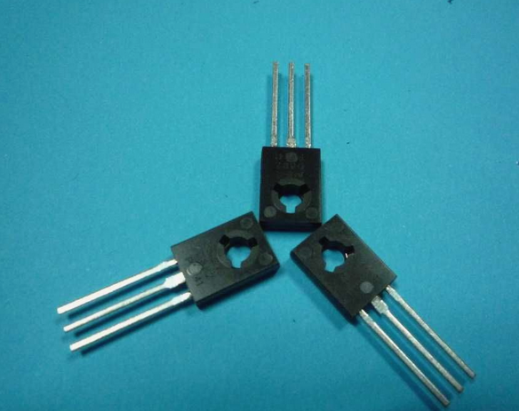

電機驅動控制就是控制電機的轉動或者停止，以及轉動的速度。電機驅動控制部分也叫做電子調速器，簡稱電調，英文electronic speed controller（ESC）。電調對應使用的電機不同，分無刷電調和有刷電調。
有刷電機的永磁體是固定不動的，線圈繞在轉子上，通過電刷跟換相器接觸來改變磁場方向來保持轉子持續轉動。無刷電機，顧名思義，這種電機是沒有電刷和換相器的，他的轉子是永磁體，而線圈是固定不動的，直接接到外部電源，問題就來了，線圈磁場方向怎麼改變呢？事實上，無刷電機外部還需要一個電子調速器，這個調速器就是一個電機驅動，通過改變固定線圈內部電流的方向，保證它跟永磁體之間的作用力是相互排斥，持續轉動得以延續。
有刷電機工作可以不需要電調，直接把電供給電機就能夠工作，但是這樣無法控制電機的轉速。無刷電機工作必須要有電調，否則是不能轉動的。必須通過無刷電調將直流電轉化為三相交流電，輸給無刷電機才能轉動。
一般使用PWM的佔空比來控制電機的轉速。
Crazepony電機驅動
無刷電機的操作相對來說是比較麻煩的，而有刷電機就是我們小時候玩的四驅車上的那種電機，接上電就能猛轉，反著接它就反著猛轉，就是這麼簡單。
Crazepony使用的是有刷空心杯電機，所以電機的控制屬於有刷直流電機控制，相對於無刷電調來說要簡單很多。Crazepony採用的是有刷空心杯高速電機，轉速在3W轉/分鐘左右。要驅動有刷電機，很簡單，只需要將信號的驅動能力增大，就能驅動有刷電機了。
那麼選擇什麼元件來提供這樣的特性呢?Crazepony的電機驅動IC選型經歷了三級管，中功率管的失敗，最後選用的是場效應管（即MOSFET）SI2302。
由於筆者完全是由於一種強烈的愛好選擇了飛行器，最開始連有刷電機和無刷電機的物理結構區別都不知道，電調又是啥？傻傻分不清楚……
從一個幾乎零基礎的狀態去選擇電機驅動芯片，彎路是必須要走的，學費是必須要交的。曾以為書上學到的東西馬上就能用，馬上能轉化為產品，後來發現真的是自己想多了。
最開始用的三極管作為電機驅動，採用很經典的共射電路“三極管工作在開關狀態應該就行了吧？”畫了用三極管驅動的PCB板，發現電機越轉越慢，根本沒勁。“也許是因為三極管扛不了大電流，好吧那我換個中功率管吧，集電極最大6A電流行了吧？”可以想象結果是不行的。

首先了解下為什麼三極管作為簡單的電機驅動是不可取的方案：
- 三極管作為一個古老的半導體先驅，它是以一個放大器件的姿態而出現的，它在線性區域特性集中，飽和與截止都是兩種極端的工作狀態，而作為電機驅動的話，我們只能選擇它的這兩種極端工作模式。
- 用三極管作為大電流負載的驅動管時，不得不考慮的是他自身的管壓降對負載的影響，這是很嚴重的。自身耗散越來越大，電機和管子是串聯關係，電池電壓只有3.7V，電機就只能越轉越慢了
在晶體管家族裡面還有一種跟三極管特性互補的，所有特性都集中在開關狀態的晶體管，場效應管，即MOSFET。通常的場效應管完全導通時，源漏極電阻都是mΩ級別的，即它自身的耗散非常小。用它做為驅動管再合適不過了。最終選擇了一個SOT23封裝的,導通電壓Vgs<4v的場管（SI2302）,結果表現出了很好的驅動性能。

每個場效應管接一個大電阻下拉，目的是為了防止在單片機沒接手電機的控制權時，電機由於PWM信號不穩定開始猛轉。接一個下拉電阻，保證了場管輸入信號要麼是高，要麼是低，沒有不確定的第三種狀態。那麼電機也只有兩種狀態，要麼轉，要麼不轉。主控輸出的是PWM波形，用於控制場效應管的關閉和導通，從而控制電機的轉動速度。這就是crazepony電機驅動的原理。就是這麼簡單。
無刷電調（讀做tiao）
在《電機與槳葉》一文中，我們提到大四軸基本上都是使用的無刷電機，無刷電機控制必須配合無刷電調使用。
無刷電調的輸入是直流，通常直接接航模電池。輸出是三相交流，驅動無刷電機。另外無刷電調還有三根信號線，輸入PWM信號，用於控制電機的轉速。對於航模，尤其是四軸飛行器，由於其特殊性，需要專門的航模電調。
那麼為什麼在四軸飛行器上需要專門的電調呢，其有什麼特別的地方？四軸飛行器有四個槳，兩兩相對呈十字交叉結構。在槳的轉向上分正轉和反轉，這樣可抵消單個槳葉旋轉引起的自旋問題。每個槳的直徑很小，四個槳轉動時的離心力是分散的。不像直機的槳，只有一個能產生集中的離心力形成陀螺性質的慣性離心力，保持機身不容易很快的側翻掉。所以通常航模直升機用到的電機控制信號更新頻率很低，而航模四軸飛行器用到的控制信號更新頻率很高。
四軸為了能夠快速反應，以應對姿態變化引起的飄移，需要高反應速度的電調，常規PPM電調的更新速度只有50Hz左右，滿足不了這種控制所需要的速度，且PPM電調MCU內置PID穩速控制，能對常規航模提供順滑的轉速變化特性，用在四軸上就不合適了，四軸需要的是快速反應的電機轉速變化。用高速專用電調，IIC總線接口傳送控制信號，可達到每秒幾百上千次的電機轉速變化，在四軸飛行時，姿態時刻能夠保持穩定。即使受到外力突然衝擊，依舊安然無恙。